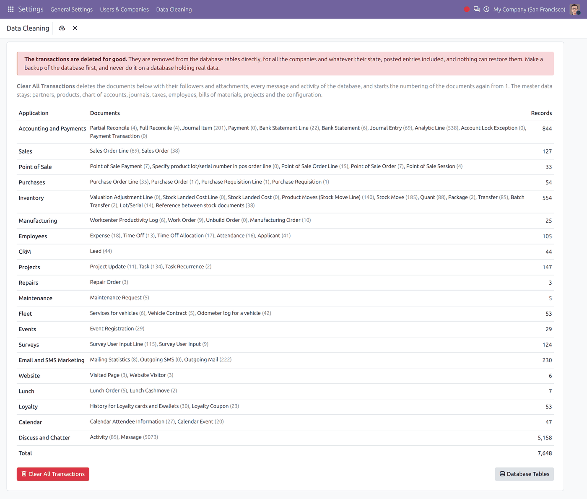
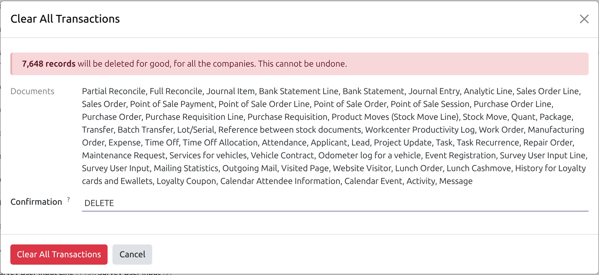
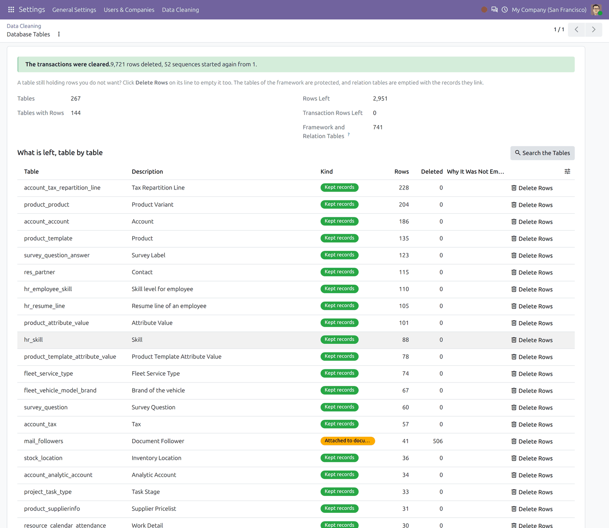
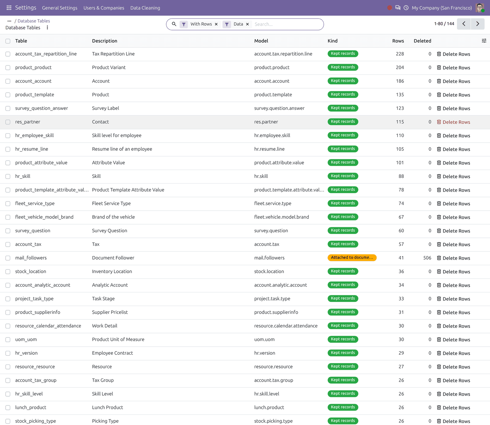
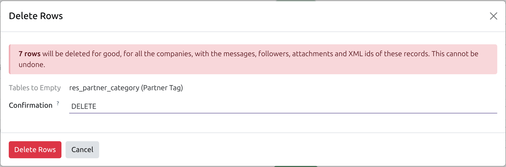

One button clears every transaction of a test database — invoices, orders, stock moves, time off, leads, tasks and the rest — and keeps the master data. Then a report shows what is left in each data table, the fullest first, and empties any of them you choose.
Only the applications installed on the database are touched. Their documents go with the followers, attachments and XML ids attached to them, every message and activity of the database goes, and the numbering of the documents starts again from 1.
Settings > Data Cleaning lists, application by application, the documents that would be deleted and how many records each holds. One button clears them all.

A demo database with 19 applications: 7,648 records, 5,158 of them messages and activities.
The confirmation repeats how many records will go and names every kind of document, and does nothing until the word DELETE has been typed.

The last step before the transactions are deleted.
Once the transactions are deleted, a report lists the data tables of the database with their exact number of rows, the fullest first, and says for each whether it held transactions, records attached to documents, kept records or relation data. Database Tables shows the same report at any time, without deleting anything.

After the clearing: 9,721 rows deleted, 52 sequences reset, no transaction row left.

Every table with rows, the fullest first.
After the clearing, the report may show a table you want empty as well: demo products, tags, contacts. Delete Rows on its line — or on several tables selected in the full list — asks for DELETE, empties them with their followers, attachments and XML ids, and shows the report again.

Emptying the contact tags left after the clearing.
The tags and their XML ids are gone, and the report is drawn again.
Can I undo it?
No. Restore the backup you took before.
Is it done in one go?
Yes, in a single transaction: if anything fails, nothing is deleted. A table the database refuses to empty is skipped and reported, and the rest is cleared.
Does it respect the rules of the models?
No. It deletes with SQL, bypassing the ORM on purpose, so no delete rule, constraint or override applies. That is what lets it empty a database, and why it belongs on a test database only.
What about apps I do not use?
Their documents are not there, so nothing happens for them.